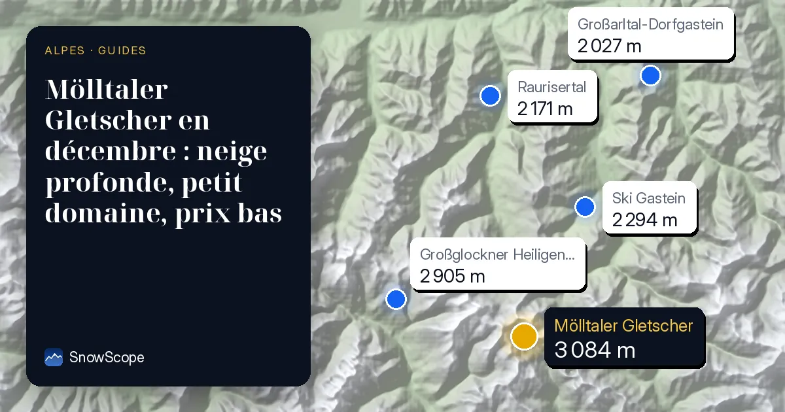

Mölltaler Gletscher en décembre : neige profonde, petit domaine, prix bas
D'abord le revers : le Mölltaler Gletscher est petit, avec 21 km de pistes cartographiées et 9 remontées, et il faut monter longtemps depuis la vallée de la Möll. Tout le reste joue en sa faveur : sa remontée la plus basse est à 2103 m, où un 15 décembre typique compte 66 cm dans nos 46 hivers d'historique, et la basse saison publiée court jusqu'au réveillon.
Consultez les prévisions neige en temps réel pour Mölltaler Gletscher sur l'application SnowScopeHauteurs de neige, alertes poudreuse et carte 3D, gratuitement.
Le revers
On ne vient pas ici pour la variété. Neuf remontées et 21 km de pistes occupent un bon skieur deux ou trois jours, pas une semaine. Et le glacier est au bout d'une vallée tranquille de Carinthie : il faut une voiture ou le transport de la station, et les soirées sont calmes.
L'autre revers concerne l'information : au moment de notre vérification, la page officielle des prix affichait encore la grille 2025-26. Les prix de cet hiver peuvent bouger un peu.


Pourquoi ça marche quand même
L'altitude. Le domaine commence à 2103 m et monte à 3084 m. En décembre, on skie donc sur une couche complète dès la première remontée. La semaine du 15 au 21 décembre, 91 % de nos hivers avaient 30 cm ou plus en bas, et 100 % à mi-pente (2593 m).
C'est aussi l'un des rares endroits où la semaine de Noël est presque sûre pour de la neige profonde : dans 98 % de nos hivers, la mi-pente avait 60 cm ou plus la semaine du 22 au 28 décembre.
La neige, date par date
Hauteur typique en bas : 50 cm le 1er décembre, 66 cm le 15 décembre, 74 cm le 24 décembre. À mi-pente : 93, 128 et 129 cm. Même une année maigre (1 hiver sur 10) garde 28 cm en bas le 15 décembre, et aucun des 46 hivers n'avait le sol nu à cet endroit ce jour-là.
Le temps long est moins rassurant : la moyenne de décembre à mi-pente est passée de 117 cm sur les 15 premiers hivers à 92 cm sur les 15 derniers. L'hiver dernier comptait 58 cm le 15 décembre. Beaucoup, mais nettement sous l'ancienne normale.
Combien ça coûte
Selon la grille officielle (2025-26, la dernière publiée), le forfait journée adulte coûte 69 EUR en basse saison, jusqu'au 24 décembre, et 72 EUR en haute saison. Le forfait 6 jours coûte 332 EUR en basse saison et 376 EUR en haute saison.
Une semaine qui se termine avant le réveillon profite donc du prix bas, sur une montagne enneigée à coup sûr cette semaine-là.
Face au Kitzsteinhorn
Le Kitzsteinhorn, au-dessus de Kaprun, est le glacier plus connu de l'autre côté des Hohe Tauern. Son forfait 6 jours coûte 396 EUR en début de saison et 440 EUR en haute saison. Son sommet est bien enneigé (137 cm un 15 décembre typique), mais sa mi-pente à 1894 m a 40 cm et sa base à 765 m seulement 6 cm.
Le Mölltaler Gletscher est moins cher et plus enneigé à toutes les altitudes que l'on skie vraiment en décembre. On renonce à la taille, à l'après-ski et aux transferts courts.
Conseils aux skieurs
- Pour une semaine entière, combinez : trois jours sur le glacier, le reste ailleurs en Carinthie.
- Restez en basse saison (jusqu'au 24 décembre) : 332 EUR au lieu de 376 EUR pour 6 jours.
- Vérifiez la grille de cet hiver sur le site officiel avant de payer : celle publiée datait encore de la saison passée.
- Le hors-piste sur glacier cache des crevasses : uniquement avec un guide et après le bulletin d'avalanches de Carinthie.
Autres cartes (sites externes)
Références et crédits
- Mölltaler Gletscher: official lift-pass prices (2025-26), checked 13 November 2026 www.moelltaler-gletscher.at/en/price-list/winter/moelltaler-gletscher
- Kitzsteinhorn (Kaprun): official lift-pass prices (2026-27), checked 13 November 2026 www.kitzsteinhorn.at/en/tickets-prices/ski-board
À propos de ces chiffres
Chiffres de neige : historique SnowScope, 46 hivers passés (1980-81 à 2025-26) aux altitudes de la station, corrigé de l'altitude (une estimation pour une zone, pas les bulletins de la station) ; « bonne neige » = 30 cm ou plus au sol en moyenne sur la semaine. Carte : notre hauteur habituelle au 15 décembre répartie sur le relief selon l'altitude. Pistes et remontées : cartographie OpenSkiMap. Forfaits : grilles officielles des stations, vérifiées le 13 novembre 2026 ; les prix peuvent changer.
Bulletins d'avalanche officiels: Lawinenwarndienst Kärnten
Citer ce bulletin
Pour la recherche, l'enseignement ou la presse : chiffres et graphiques réutilisables librement sous CC BY 4.0 avec cette citation.
SnowScope (2026), Mölltaler Gletscher en décembre : neige profonde, petit domaine, prix bas, https://snowscope.app/blog/fr/2026/11/moelltaler-gletscher-december-skiing-carinthia-low-cost.html, consulté le 2026-11-14
SnowScope (Atlas Labs). (2026, November 14). Mölltaler Gletscher en décembre : neige profonde, petit domaine, prix bas. SnowScope snow reports. https://snowscope.app/blog/fr/2026/11/moelltaler-gletscher-december-skiing-carinthia-low-cost.html
BibTeX
@misc{snowscope2026moelltalergletscherdecem,
author = {{SnowScope (Atlas Labs)}},
title = {Mölltaler Gletscher en décembre : neige profonde, petit domaine, prix bas},
year = {2026},
month = nov,
howpublished = {\url{https://snowscope.app/blog/fr/2026/11/moelltaler-gletscher-december-skiing-carinthia-low-cost.html}},
note = {Published 2026-11-14 13:14 UTC; accessed 2026-11-14}
}· CC BY 4.0 · Méthodes, données et outils →
Mölltaler Gletscher : neige et température selon l'altitude, cet hiver vs l'hiver dernier (outils) →
Suivre Mölltaler Gletscher
Gratuit : un message quand la neige arrive, et la météo chaque matin.
Autres bulletins neige

Notre série de 46 hivers dans les Alpes, 108 points de 667 à 3 872 m : moins de jours de neige partout, nettement à 81 %. Ce qui a changé et pourquoi.

Saint François Longchamp n'a que 3 cm de neige, soit 12 % de l'enneigement habituel à cette époque, mais 110 cm sont prévus au cours des deux prochaines semaines.